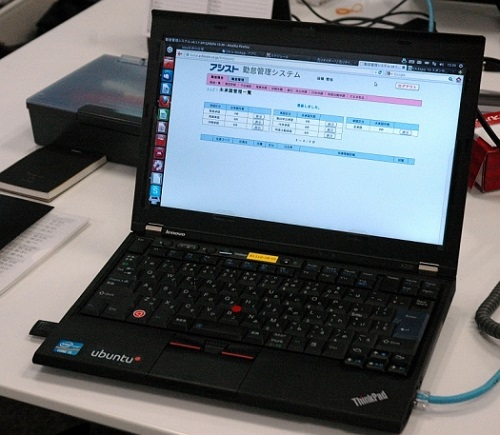

也紀念我們永遠的朋友 李士傑先生（Shih-Chieh Ilya Li）。
Linux 的精神勝利
◎本文原載 Linux Pilot，原文章連結按此。
Windows XP 和 Microsoft Office 2003 的支援將於 2014 年 4 月 8 日正式完結，究竟 IT 業界將會如何應對？以往很多人都不會將這個當成問題，因為唯一的解決辦法便是將 Windows 和 MS Office 升級。但隨著美國政府的網路監控醜聞曝光，歐洲各國對升級 Windows 表現猶疑，就連一直對美國言聽計從的日本，其主流媒體中也出現「利用 Linux 取代 Windows」的言論，這是從來都未發生過的。
日本 IT 業界將這次的狀況比喻為 2000 年時的千年蟲問題，個人企業無不臨陣以待，全因為 Windows XP+MS Office 2003 正是目前日本最流行的組合。資訊安全當然是升級要點，但經濟不景也是重要考慮。升級無可避免地要花一筆開支，不升級就只有參加微軟在 2014 年後為 Windows XP 特設的支援服務，每台電腦得支付 200 美元年費。進退兩難下，有人開始提出利用 Ubuntu 取代 Windows XP，連帶筆者幾位非業界的日本朋友也問及相關細節，顯示 Linux 在日本民眾間的認知度大增。

事實上在 2012 年，日本一家公司就為了開拓 Linux 支援業務，「以身作則」的將內部 950 台電腦全部轉為 Ubuntu，並得到 Canonical 的支援。但過程並不容易，安裝 Linux 後舊有的電腦中小部分不能發聲、接上投影機後沒畫面、又或者觸控板沒反應，但新購入的電腦則沒問題。技術人員已經列出此等硬體並向 Canonical 報告，並在下一個版本的 Ubuntu 中作出改良。其次是以日文為檔名的檔案在 Windows 壓縮後，在 Ubuntu 下解壓時變成怪獸字，Canonical 於是在 Ubuntu 中加入了支援亞洲語系檔名的壓縮工具。
應用程式方面，公司一直使用 Becky! 作為郵件客戶端，但 Becky! 卻沒有 Linux 版本，結果採用 Thunderbird 代替，防毒軟體則使用開源的 ClamAV。問題較大的是一些只提供 Windows 版本客戶端的程式、和一些必須 ActiveX 或 IE 才能使用的「假 Web 程式」，暫時的對策是將此等 Windows 電腦虛擬化，並逐步開發跨平台方案代替。公司也設立了支援部門解答一般用戶的疑問，當中最多人詢問的是有關 Thunderbird 的操作和印表機的設定，對 Linux 的查詢卻不如想像的多，處理的個案也由開始時每天 20 宗減至 10 宗。
當然還有其他小問題，例如 Windows 和 Ubuntu 因為預設字體不同，同樣使用 OpenOffice.org 或 LibreOffice 製作的文件，在 Windows 和 Linux 下看上去會有差異，當中又以簡報軟體較為明顯，解決方法是改為以 PDF 方式存檔。至於當初被視為最大問題的 MS Office 文件兼容性，則可透過要求傳送文件的一方另存檔案為開放文件格式 (ODF) 解決，前提是對方使用的是 MS Office 2007 或以上版本。事實上早在 2007 年，該公司就已經將全部 MS Office 升級為 OpenOffice.org，三年間共節省了 1,700 萬日元。負責人坦言將 Windows XP 升級為 Linux，在成本效益上不及升級至 OpenOffice.org 般明顯，但對將來減少 Windows 伺服器 CAL 費用和對微軟的依賴，卻是重要的一步。
專欄總覽


E-Mail：contact@openfoundry.org Address：台北市南港區研究院路2段128號 中央研究院資訊科學研究所 . 隱私權條款. 使用條款